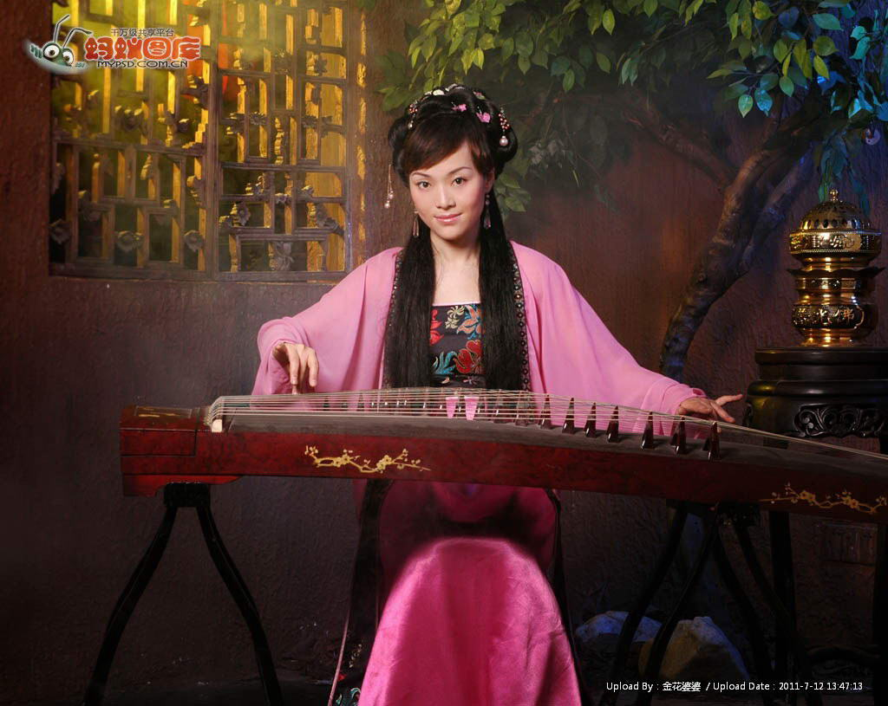
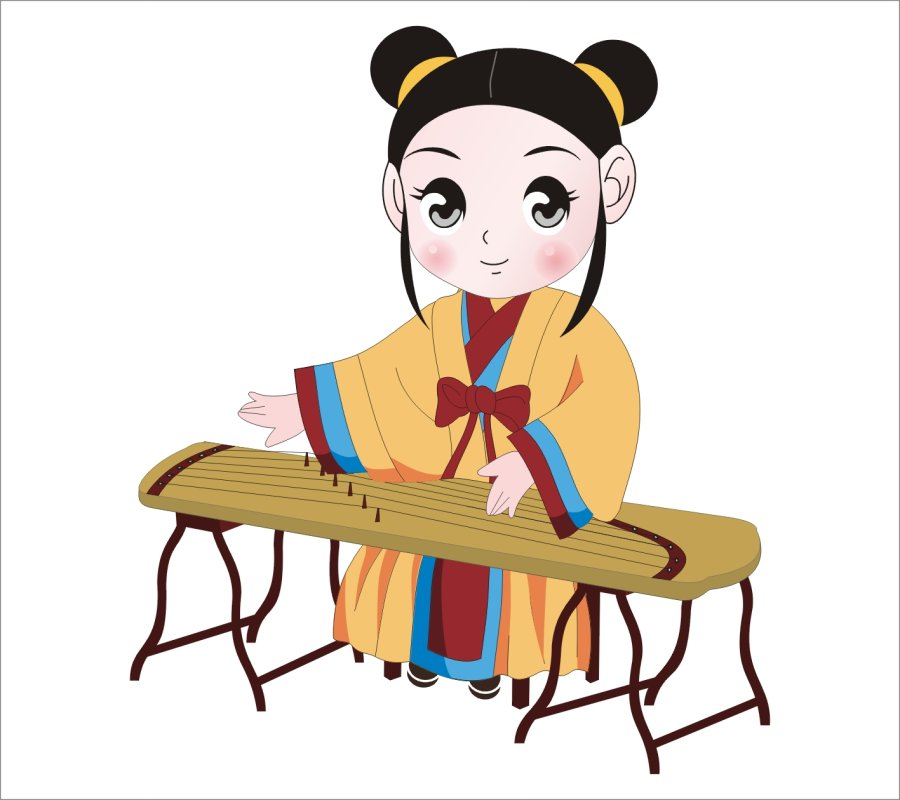

我的古筝 |
|||
| 首页 | 我的设计 | 我的古筝 | 我的轮滑 |
古筝基本知识 古筝也叫汉筝，是汉族传统乐器，它音色美妙动听，音域广阔，具有相当的表现力，受到越来越多的人的喜爱。如今市场上的古筝品种繁多，各种品牌扎堆，要仔细判别，不然很容易买到质量不好的，影响学习古筝的兴趣以及考级，像敦煌、音美尔、碧泉、天艺，这样的大品牌质量保证。下面由小编给大家介绍一下古筝基础知识。 1、古筝的结构，它由面板、雁柱、琴弦、前岳山、弦钉、调音盒、琴足、后岳山、侧板、出音口、底板、穿弦孔组成。筝的形制为长方形木质音箱，一般古筝的统一规格为：1.63米，21弦。古筝的面板大多数采用河南兰考的桐木制造，框架为白松，筝首、尾、四周侧板有红木、老红木、金丝楠木、紫檀等名贵木材，古筝的音质取决于面板和琴弦，周边用料对古筝的音色略有改善，以老红木、紫檀、金丝楠木为佳。 2、古筝的弹奏手法，常用演奏手法采用右手大、食、中、无名四指拨弦，演奏出旋律、掌握节奏，左手演奏法还有在筝柱左侧顺应弦的张力、控制弦音的变化，以调整音高，完善旋律。筝的指法颇多，右手有勾、托、劈、挑、抹、剔、打、摇、撮等，左手有按、滑、揉、颤等。 3、古筝的保养，古筝如果保管和使用不当，会使乐器受到损害。经常使用乐器，使乐器处于良好的振动状态，有利于乐器各结构之间进一步调合，所谓琴靠人养。古筝使用的场合最佳温度为20℃，最佳湿度为50%。一般情况下，温度保持在16-28℃、湿度在50～70%之间的空间内使用古筝对乐器振动和发音都较有利。 |
 |  | |